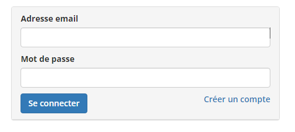

Synthese de stage 1ère année
J’ai réalisé un stage dans la filiale DIGIT du groupe SF2i du 02/11/2021 au 17/12/2021 pour une durée de 7 semaines. J’ai réalisé une grande partie de ce stage en télétravail mais cela ne m’a pas empêché d’apprendre.
Logiciels utilisés
Présentation
Organisation de l’application :
L’application est déployée sur un serveur Tomcat qui tourne sur un serveur AWS avec un serveur SQL.
Elle fonctionnait avec le protocole http non sécurisé.
Pour la sécuriser il a fallu se connecter sur le serveur AWS et ajouter un certificat Let’s Encrypt.
L’application est organisé avec le modèle MVC :
- Le modèle est la page web
- La vue est l’affichage des données
- Le contrôleur effectue les calculs et renvoie les données aux pages.
- Ce modèle permet de bien organiser le projet, afin de se retrouver plus facilement et facilite le fonctionnement.
Modifications effectuées
○ Un bouton pour réouvrir une réunion précédemment fermée
○ Une Checkbox pour autoriser les absents à voter
○ Une nouvelle page qui récupere la liste des votes par cercle
La mission principale de mon stage était une intégration des utilisateurs avec Azure Active Directory. C’est-à-dire faire un lien entre l’AAD de SF2i et l’application web pour que le système de connexion fonctionne avec son identifiant dans l’AAD. Pour faire cela il a fallu créer une application dans l’AAD de capteur,

Pour faire cela il a fallu créer une application dans l’AD, j’ai donc contacté le consultant infrastructures qui m’a fourni les informations nécessaires :
Application ID : 2f36************************
Tenant ID : 5c97************************
Grâce à ça j’avais maintenant un accès “Read” de l’API de Microsoft Graph. Je pouvais maintenant récupérer chaque utilisateur de l’AAD de SF2i Puis je demande à l’API Microsoft Graph si le compte existe et est correct Si je reçois une réponse convenable, j’autorise le login afin qu’il accède à l’application en tant que membre. Cela permet à chaque membre présent dans l’AAD de SF2i peut se connecter sur Capteur.